A gyerek első kontrollja
Az első alkalom inkább játék: megszámoljuk a fogakat, megmutatjuk a kis tükröt és a székét, ami felmegy. Csak akkor kezelünk, ha kell.
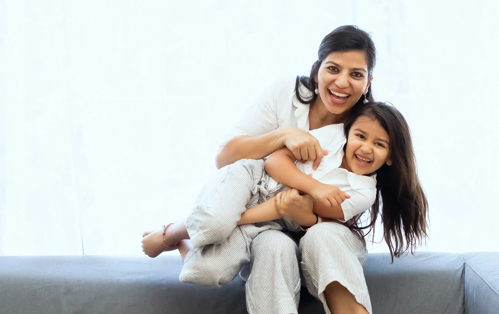
Családi fogászati rendelő Nagyszebenben. A kicsiket az első foguktól kezeljük, a szülők és a nagyszülők kartonja is itt van.
Időpont kontrollra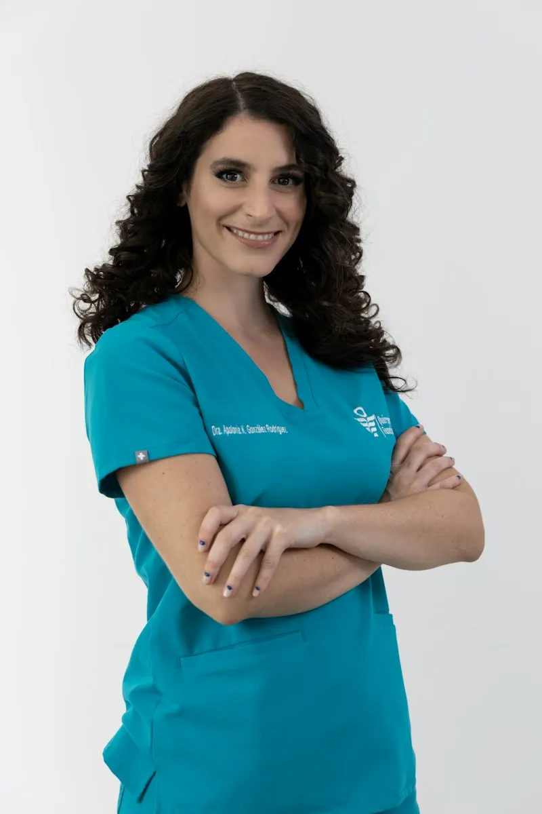
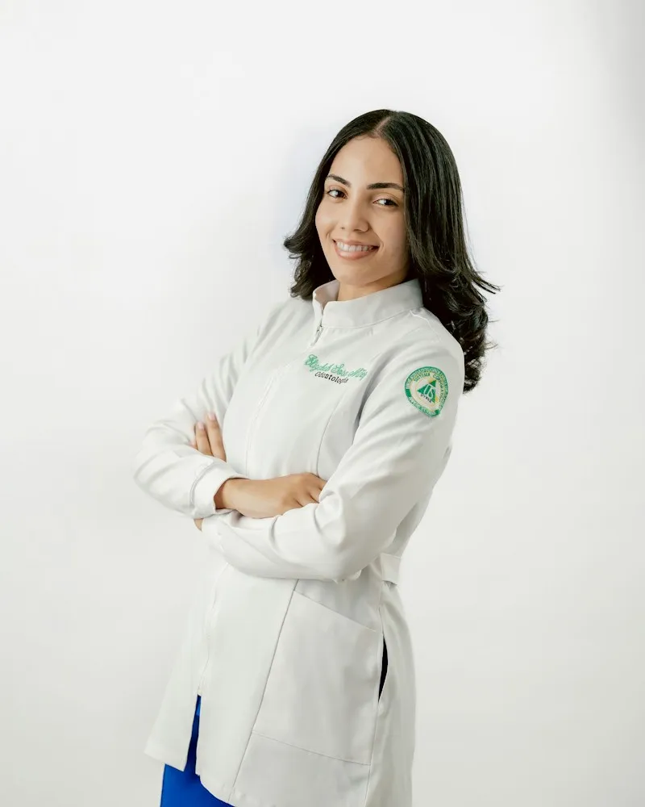
312 Google-értékelés átlaga. A legtöbbet szülők írták.
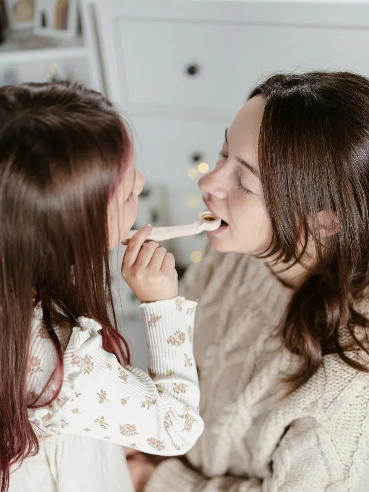
A gyerek első kontrolljától a nagypapa fogsoráig. A csapatban mindenki a saját szakterületén dolgozik.
Az első alkalom inkább játék: megszámoljuk a fogakat, megmutatjuk a kis tükröt és a székét, ami felmegy. Csak akkor kezelünk, ha kell.
A maradó őrlőfogakat rögtön az előbújásuk után lezárjuk, 6 és 12 éves kor körül. Fogánként kb. 10 perc, érzéstelenítés nélkül.
Rögzített készülék vagy átlátszó sín, gyerekeknek és felnőtteknek. Az első fogszabályozási felmérést 7 éves kor körül javasoljuk.
Fogkőeltávolítás, Airflow és professzionális fogmosás félévente. A gyerekek itt tanulják meg a helyes fogmosást, plakkfestő tablettával.
Implantátumok, implantátumra épülő pótlások és kivehető fogsorok. A fogsort lehetőség szerint még aznap megjavítjuk.
Minden nap két szabad időpontot tartunk fenn a pácienseinknek fogfájásra, letört fogra vagy kiesett pótlásra.
A rendelő 2014-ben egyetlen székkel indult, és a páciensekkel együtt nőtt. Sok gyerek, akit az első foga idején láttunk, ma már egyedül jár hozzánk a fogszabályzójával.
Egy pillantással látjuk mindenki kórtörténetét. Tudjuk, kinek hány évesen volt szuvas foga, és kinek jön a kontrollja.
20:00-ig rendelünk, hogy ne kelljen órát kihagyni az iskolában vagy a munkahelyen.
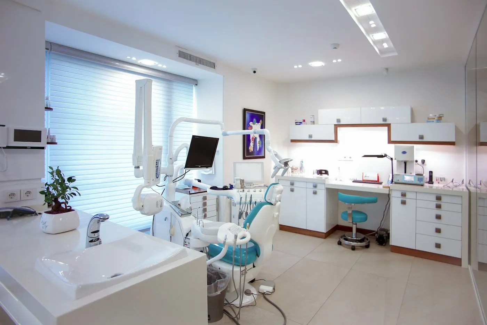
Négy orvos és két asszisztens. A gyerekek általában ugyanahhoz a doktornőhöz járnak az első alkalomtól kamaszkorig.
Általános fogászat, alapító
Gyermekfogászat, 2 éves kortól
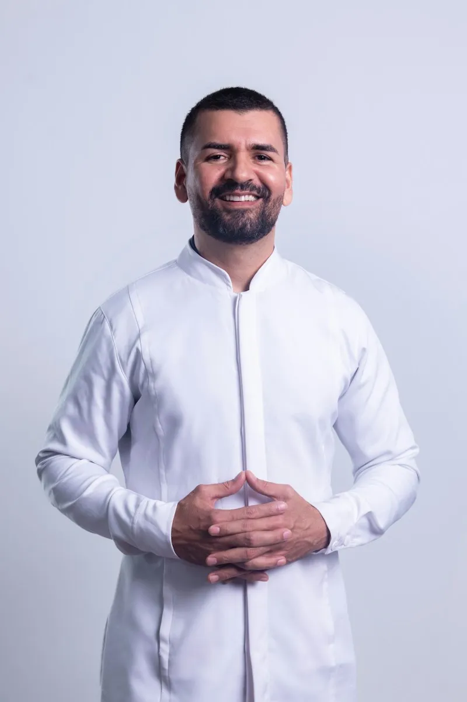
Implantológia és fogpótlás
Fogszabályozás, gyerekeknek és felnőtteknek
Családi időpont
Mondd el telefonon, hányan vagytok, és kinek mire van szüksége. Az időpontokat egymás után, szomszédos rendelőkben foglaljuk, hogy ne kelljen egy órát ülni a váróban.
Valódi példa a naptárunkból, megváltoztatott nevekkel.
Néhány üzenet szülőktől és nagyszülőktől az elmúlt évből.
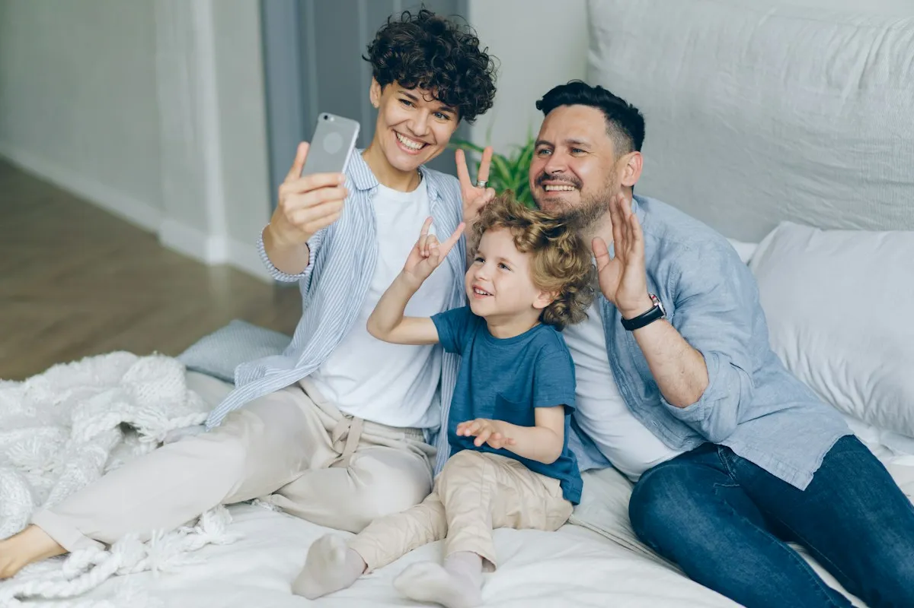
„Három éve járunk ide mind a négyen. A gyerekek kérdezik, mikor megyünk »Elena nénihez«, ez mindent elmond. A legutóbbi kontrollon két óra alatt mindenki végzett.”
Cristina MunteanuKétgyerekes anya
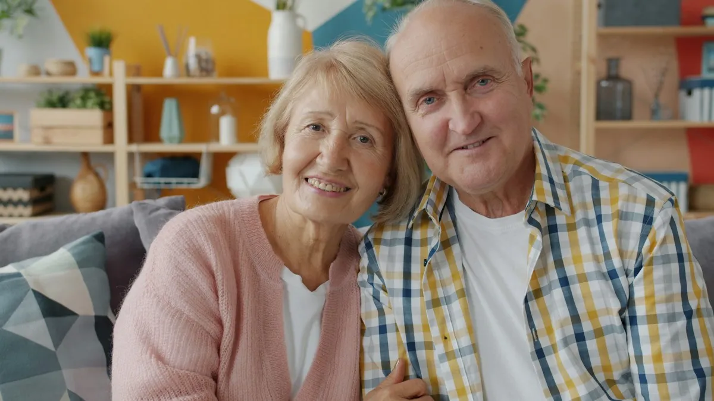
„Még aznap megjavították a fogsoromat, amíg megittam egy kávét szemben. Most a feleségem is hozzájuk jár implantátumért.”
Gheorghe Barbu71 éves páciens
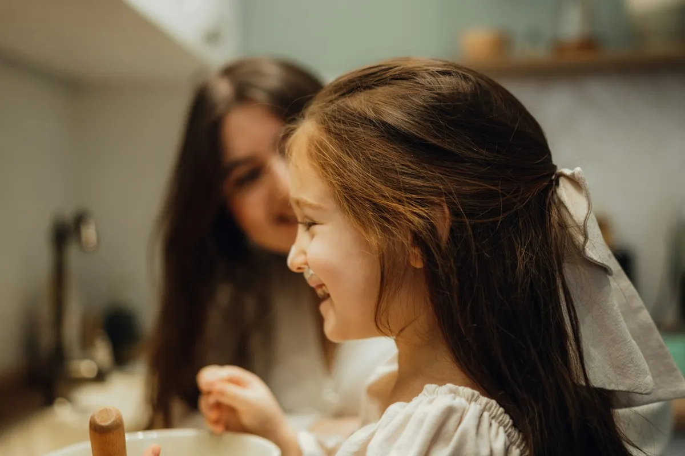
„A kislányom a gyerekorvosnál is sírt. Itt az első alkalom csak játék volt a kis tükörrel. A másodikon már magától ült be a székbe.”
Andreea VladAnya
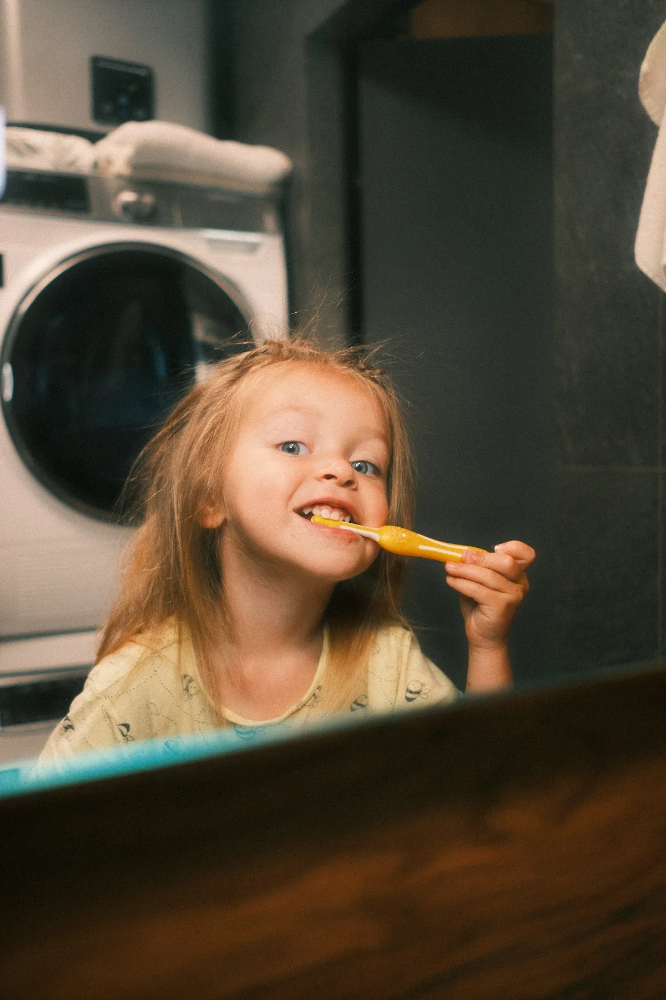
„Írásban kaptuk meg a fogszabályozás tervét, két évre előre minden költséggel. Közben egyetlen plusz tétel sem jött elő.”
Sorin DragomirApa
Romániában fejlesztett online fogászati szoftver. Itt tartjuk a család minden tagjának időpontjait, kezelési tervét és röntgenfelvételeit.
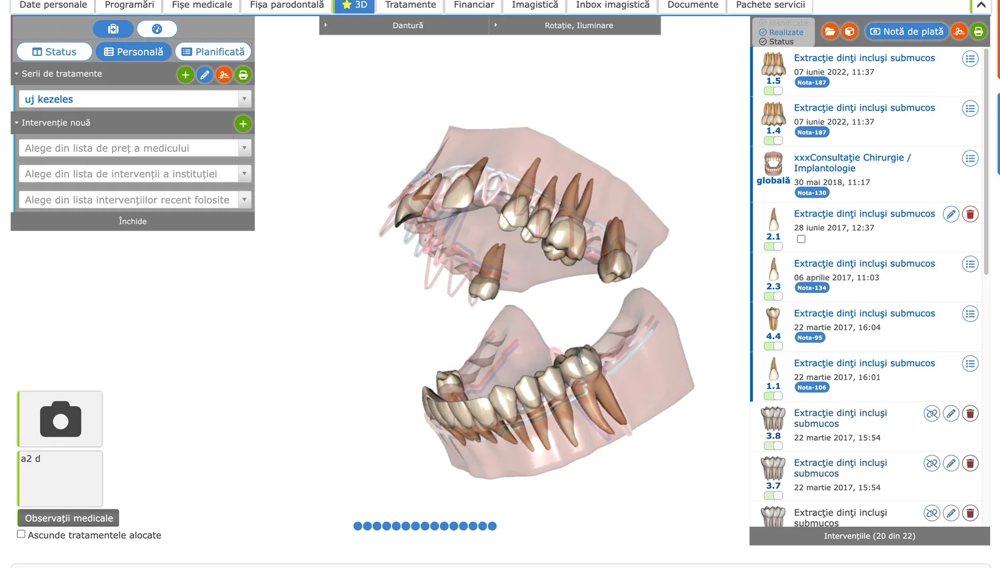
SMS vagy e-mail minden időpont előtt, minden gyereknek külön.
Szakaszok, költségek és időpontok egy tervben, amit írásban is megkapsz.
A röntgen- és intraorális felvételek évről évre a kartonban maradnak.
A képernyőn mutatjuk meg, mit kezelünk és miért, mielőtt belekezdünk.
A dROOT-ot több mint 1.200 fogászati rendelő és klinika használja Romániában.
Amit a szülők a legtöbbször kérdeznek telefonon.
Az első fognál, de legkésőbb 2 évesen. Az első kontroll 15 perces, és inkább ismerkedés a rendelővel.
Igen. Hívjatok fel, és mondjátok el, kinek mire van szüksége. Az időpontokat egymás után foglaljuk, általában 16:00 után.
Megállunk, soha nem erőltetjük. Adunk még egy rövid, ingyenes ismerkedő alkalmat, és onnan folytatjuk.
Igen, a nagyszebeni CAS-szal szerződésünk van a 18 év alattiak kezeléseinek egy részére. A recepción pontosan megmondjuk, mit térít.
20-30 percig, röntgennel, ha az orvos szükségesnek tartja. Utána írásban megkapod, mi következik és mennyibe kerül.
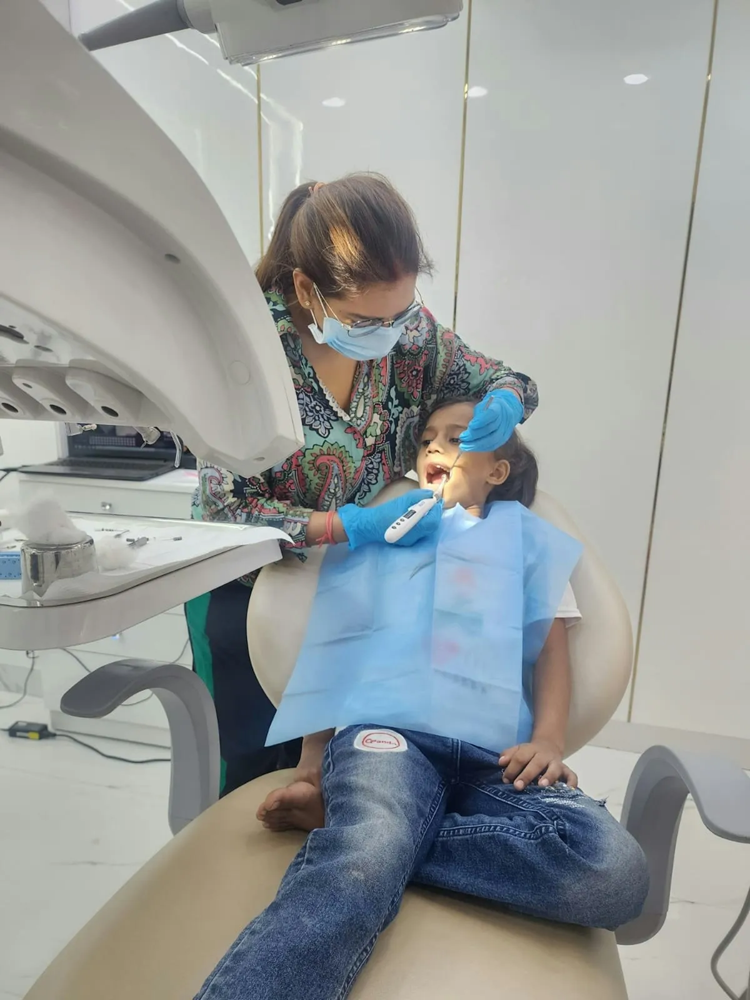
Hívjatok fel, és mondjátok meg, hányan jöttök. Keresünk egy délutánt, amikor mindenkit fogadni tudunk.
Hétfő – Péntek 10:00 – 20:00 · Szombat 9:00 – 14:00